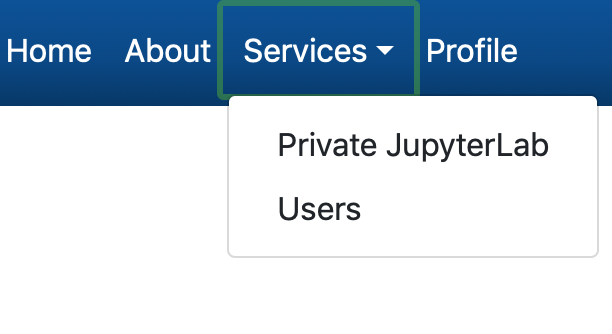
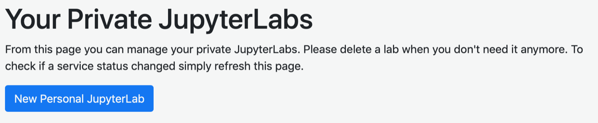
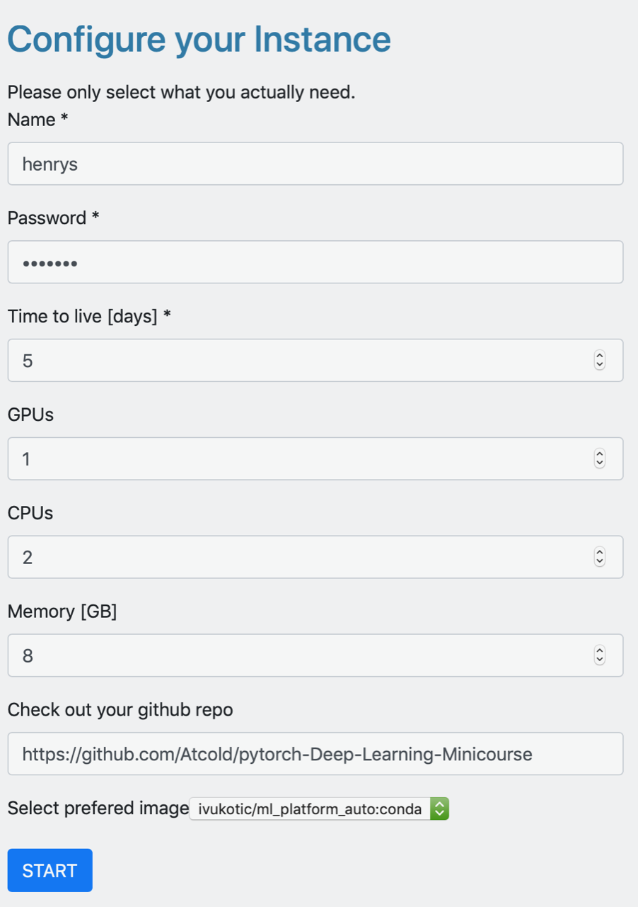
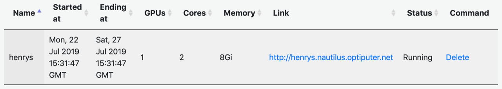

Remote CoDaS Platform Setup
First, login to the platform using Globus with your CERN or university credntials.
- Using the bar at the top of the screen select Services -> “Private JupyterLab”

Then select "New Personal Lab"

- Fill out the form with appropriate settings to configure your lab
- Name: this needs to be unique for each instance so use something with e.g. your actual name
- Password: set your own password
- Time to live: 5 days is fine
- GPUs: 1 is fine
- CPUs: 2
- Memory: leave at 8
- Check out your github repo: https://github.com/Atcold/pytorch-Deep-Learning-Minicourse.git
- Select preferred image: this must be set to the conda image

Click start. It will likely take a few minutes to setup; when it is running it will appear in your list of labs

- Launch the lab by clicking on the link and entering your password from the setup step. You know have a CoDaS-HEP environment when many useful packages already installed. You can add additional packages to this environment or create an entirely new one if desired.